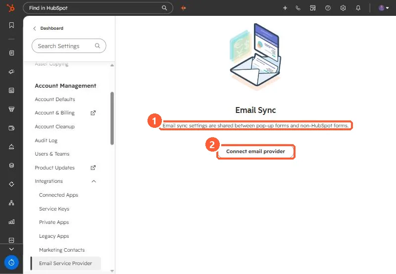

Short answer
Settings, Integrations, Email Service Provider says email sync settings are shared between pop-up forms and non-HubSpot forms. Using Mailchimp as the example, HubSpot's KB says contacts sync one way, HubSpot to Mailchimp, only first name, last name and email are sent, and contacts who submitted before you connected are not added. For two-way sync, HubSpot points to its data sync instead.
1. The setting


2. Limits
- One way, from HubSpot to the provider.
- Only first name, last name and email address.
- Not retroactive. Earlier submissions are not sent.
3. Related settings
Non-HubSpot form notifications are set for the account, not per form, and go to active users. See non-HubSpot forms for capturing the submissions in the first place.